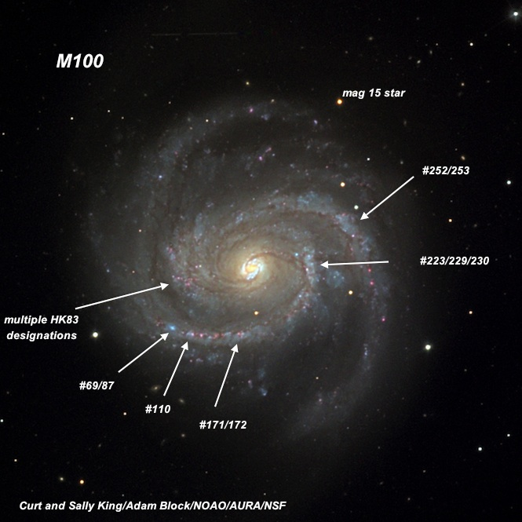

OR: April observing with a 48-inch in Texas (Part III)
by Steve Gottlieb
|
This is the last installment of my observing notes made in April using Jimi Lowrey's 48-inch super-sized dob, along with Howard Banich. I've included a wide mix of
objects -- a protoplanetary, a gravitationally lensed quasar, interacting galaxies, a compact quartet of compact galaxies and a couple of spiral galaxies. We alternated our
observing between dim and challenging objects and bright showpieces. They're all awesome through this scope! -- Steve Gottlieb |
 Frosty Leo Nebula = IRAS 09371+1212 09 39 54.0 +11 58 53 Size: 15"x10" In 1987, Forveille and collegues dubbed At 375x, 697x and 813x (unfiltered); two very small knots (roughly 6" each) were easily resolved oriented NNW-SSE with a small gap between and a length of ~15".
The south-southeast knot was slightly brighter as well as slightly irregular and elongated 90° with respect to the orientation of the knots (i.e. WSW-ENE). The north-northwest
knot was also somewhat oval or irregular in shape. A thin halo connected the two lobes. A roughly oval appendage extended north-northwest from the north-northwest knot and an
extremely faint stellar brightening was at its tip. I didn't notice a similar extension on the SSE end, though on images it brings the total length to ~25".
French astronomer Stephane Javelle discovered IC 803 visually on 25 Apr 1893 using the 30-inch f/23 refractor at the Nice Observatory in southern France. Halton Arp catalogued it as the first member in the Arp category "Galaxies with Jets". Clearly this is a distorted interacting system on the Sloan Digital Sky Survey. At 488x and 697x; the core of the eastern component appeared fairly faint, small, round. A very faint, thin spike (tidal plume or jet) extends ~15" SE. Occasionally a second, very faint stubby tidal tail extends ~10" north-northwest . The entire length of this chaotic galaxy is ~30". The nucleus of the western component is just 25" W. It was moderately bright but appeared stellar. At 697x, A very low surface brightness, very small halo was
visible, but the tidal plume or jet extending southwest was not seen.  M100 is one of the largest and brightest spirals in the Virgo cluster. It was the fist Virgo cluster galaxy in which the HST observed Cepheid variables (1993) and derived a distance of 55 million light years (since revised to ~50 million light years). Spiral structure was first seen by Lord Rosse using his 72" Leviathan in 1850. We had a stunning view of this gorgeous spiral at 375x and 488x. M100 is sharply concentrated with an intensely bright circular nucleus. Two prominent, high contrast arms (fairly narrow) each rotate ~270° and can be clearly traced to within 1' of the center. The south and north outer tips of the arms are between 5.5'-6' apart with the overall size ~6'x5'. One arm begins off the WNW side of the core with a bright mottled section angling nearly north-south for ~25". This section contains multiple HII sites NGC 4321:[HK83]220/223/229/230 from Hodge and Kennicutt's 1983 "An Atlas of H II regions in 125 galaxies". The arm curls clockwise around the south side. A small (~8" dia.) HII knot (#160/171/172) is within this arm, 1.0' S of center. Just to the east [1.5' SE of center] is a brighter, mottled section that contains a close pair [18" separation] of compact HII knots (#110 and #69/87). The surface brightness of the arm abruptly drops as it shoots due north on the east side of the halo for ~3'. The arm dims further as it curves west on the northeast side of the outer halo and ends just southeast of mag 15 star situated 2.9' NNW of center. The second arms begins ~1' SE of center with a thicker, much brighter region. The Hodge-Kennicutt Atlas catalogues numerous HII designations in this region, but none stood out individually. The arm sharply abruptly narrows and rotates clockwise around the north side of the core towards the west. It passes just south of two mag 15.5 stars, where there is a slightly brighter mottled section containing HII regions #252/253. The arm dims significantly as it heads south on the west side of the halo. Finally, it weakens further and spreads out at the end on the southwest side of the galaxy [2.6' from center].
I made another short observation of this remarkable asymmetric edge-on at 375x and 488x before observing the Twin Quasars, which lie 14' NNW. The brightest
portions of this 6:1 edge-on NNW-SSE is warped and bowed out in the very bright central section towards the east. An intense nucleus is within this central section, though offset
to the east of center. The west side of the central section is irregular in surface brightness due to dust. The northern extention thins and has a slight bend on the north end,
beyond a mag 14 star. On the southwest side is a bright streak, but to the east of this streak and further south the galaxy is dusty and sections of the galaxy appear to be highly
obscured. Two mag 14 stars are off the west side of the galaxy and mag 9.6 Twin Quasars Both mag 16.7/16.9 components easily visible nearly continuously at 697x. The southern component was clearly slightly brighter, although the delta mag is only 0.2. At 6" separation, the pair is relatively widely split at this magnification.
This member of
At 488x this late spiral (type SABcd) appeared very bright, very large, elongated 3:1 WSW-ENE, 5'x1.5'. Well concentrated with a large bright oval core that
gradually increases to a small bright nucleus and stellar pip. The region surrounding the core is mottled, due to slightly brighter regions and dust patches. An ill defined broad
spiral arm is on the west side of galaxy, curving from north to south. A mag 14 star, 2.0' SW of center, is barely off the southwest end of this arm. A bright patch is 1' SW of
center (not part of the arm), and just to its north is a relatively large darker (dust) region. A second broad arm arc is visible at the east end of the galaxy making a sharp
curve clockwise, and passing just inside a mag 13 star at the eastern tip.
This quartet is squeezed into less than 2' of sky! The group is located 36' south of |